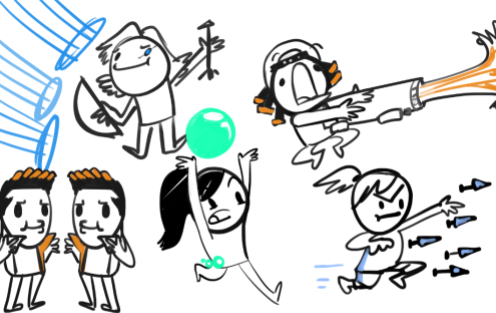

Morning (8 AM - 10 AM)
In the morning, I usually wake up at around 8AM and I wash up, brush my teeth, and follow my skin-care routine which consists of:
- Washing my face with a sulfer soap bar
- Patting my face dry with a paper towel
- Applying on retinol serum to fade dark spots and wrinkles
- Applying my daily moisturizer
- Applying my acne gel for my acne spots
After my skin-care routine, I make myself a cup of coffee and go upstairs where my computer is to start my day. I am currently enrolled in summer classes at my school so I usually watch my professor's lectures and finish the labs for the week.
Afternoon (11 AM - 4 PM)
After completing my labs, I usually play games on my computer with my friends using the Discord App to communicate. Since I am not able to go outside and hang out with my friends, I have been playing a lot more online games to "hang out" with them. Recently, I have been obssessed with a First-Person Shooting Game (FPS) called Valorant. It recently came out and I have been convincing most of my friends to join me. One of my friends became obsessed as well and drew a picture of our team in a silly doodle.
In Valorant, I mostly play as the character named Raze. She is very "explosive" considering the way she plays. In the game, every character has their own utility kit and Raze's kit involved a lot of explosives. I particularly like her because she is very mobile, and she can get kills easily by throwing frags.
Evening (5 PM - 9 PM)
Usually at 5PM, I get tired of playing games and I head back downstairs to grab food and watch a movie or a TV show on Netflix. Currently, I am watching a TV show called Outer Banks. It is about a group of friends who search for a sunken ship that carried 400 million dollars worth of gold.
I usually eat dinner at around 8PM and then get ready for bed. I sleep early during quarantine because there isn't much to do and I get tired easily.